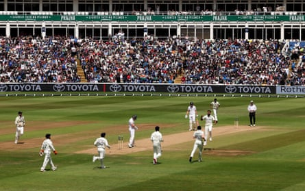
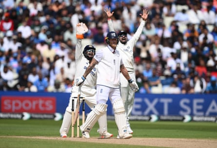

They came, they saw, they conquered. And how they conquered, India surging to a 336-run thumping of England on a giddy final day at Edgbaston to level this five-match series at one apiece. For Shubman Gill, who personally delivered 430 runs with the bat and banked his first victory as Test captain, it completed a week he will never forget.
And Ben Stokes? Gill’s opposite number will doubtless be keen to move on quickly, and in that respect, the fact the third Test starts at Lord’s on Thursday is something of a blessing. Even so, there is plenty for Stokes and Brendon McCullum, the head coach, to chew on over the next three days. Their side were outperformed in all departments and were eventually bowled out for 271 with 28 overs remaining after being set an improbable target of 608 to win.
A final day on which India’s supporters also dominated the stands highlighted arguably the greatest disparity, that being the superiority of a touring attack that had rested the world’s No 1 bowler in Jasprit Bumrah. Up stepped Akash Deep, the powerful, bustling right-arm quick from Bihar who claimed six for 99 to finish with 10 across the two innings – more than Chris Woakes, Brydon Carse and Josh Tongue combined.
Deep had a strong case to be named player of the match given the avalanche of runs witnessed on this surface; likewise Mohammed Siraj after claiming six for 70 in England’s first innings. And yet it was almost inevitable that the prize should go to Gill, whose scores of 269 and 161 made good on a pre-match promise to be personally greedier.
In contrast to Gill’s insatiable appetite was an England side that registered seven ducks across two innings and among the top seven had only Jamie Smith and Harry Brook travel north of 50. Smith did so twice, his remarkable 184 not out on day three followed by a controlled yet muscular 88 on the final day in which the rope was cleared four times.
Akash Deep celebrates taking the wicket of Ollie Pope on day five.Photograph: Alex Davidson/Getty Images
Not that Smith had Gill sweating here. With the tail for company, England’s wicketkeeper was simply raging against the dying of the light when he started pumping the ball into the stands. In the end he was mugged by a slower ball from Deep that was gobbled up at square leg – a fitting scalp to complete the fast bowler’s maiden Test five-wicket haul.
If there were any nerves for Gill they probably came first thing, when he opened his curtains and saw rain sweeping through Birmingham. Had he waited too long to declare the evening before? With the ball 16 overs old and soon to go soft, the loss of an entire session would deny his seamers the use of a second later in the day.
But courtesy of some rapid work by Warwickshire’s ground staff – a mop-operation later surpassed by the tourists – play got under way at 12.40pm with 80 overs slated. And by the end of the first session, with England having resumed on 72 for three before crumbling to 153 for six, Gill could start preparing his first ever victory speech.
Rishabh Pant appeals for the wicket of Ben Stokes just before lunch.Photograph: Stu Forster/Getty Images
Once again it was Deep who set the tone for his captain here. Any movement was always going to be fleeting, and yet he charged in with purpose and exploited it to the maximum to see Ollie Pope and Harry Brook banjaxed by deliveries that nipped in. Pope chopped on for 24 via a crooked defence, while Brook’s lbw for 23 was set up by a succession of outswingers followed by the sucker ball.
Last to fall in this session was Stokes, lbw for 33, after another frenetic struggle against Ravindra Jadeja bowling into the footmarks. It was, however, the off-spin of Washington Sundar – bowling without that assistance – that completed a miserable Test for the England captain when he propped forward to a delivery that drifted in.
Thereafter it was a case of when, not if, India would wrap up their first victory at Edgbaston. Beyond Smith’s lusty blows there was a spot of long-handle from Carse before he was the last man to fall for 38 and, somewhat inevitably, to Deep.